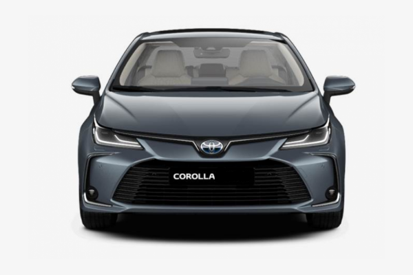

|  | التيوتا كرولا هي عربيه صناعة يابانية تتميز بسعه ماتور 1600سي سي وقوته تصل الي 120حضان وقدرتهاعلي الوصول الي السرعه القصوي والتي تصل الي 189كم/ساعه وتسارع يصل الي 12 ونوع ناقل cvtوتستهلك 6.8لتر /100كيلومتر ,لمزيد من المعلومات اضغط علي الصوره. |
|
يتوافر من «تويوتا فورتشنر» إصدارين في السوق المحلية؛ – النسخة الأولى – مدعومة بمحرك رباعي الاسطوانات، سعة 2700 سي سي، ليولد قوة 163 “حصان”، وعزم أقصى للدوران 245 نيوتن/ متر، متصل بناقل حركة سداسي السرعات أوتوماتيك.وفقًا للبيانات المعلنة عن «تويوتا» تعتمد السيارة على منظومة الجر الخلفي، التي يمكنها التسارع من وضع الثبات حتى 100 كم/ ساعة، في غضون 12.4 ثانية. ويبلغ متوسط الاستهلاك من الوقود نحو 10.5 لتر، عند قطع مسافات تصل إلى 100 كم. للمزيد من البيانات اضغط علي الصوره. |